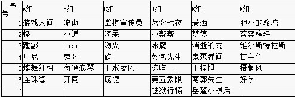

第一阶段积分、威望发放及后续分组编排
#1 <font color="red">第一阶段积分、威望发放及后续分组编排</font>作者：有志青年 发表时间：2010-10-12 8:40:44
详细见5楼、六楼。
每组取前三名，D组D4进入第二阶段A组。另外特邀天羽、小天加入比赛。
第二轮分组如下：
第二轮A组：a1,f1,b2,d2,c3,e3,d4，
第二轮B组：b1,d1,c2,e2,a3,f3,天羽，
第二轮C组：c1,e1,a2,f2,b3,d3,小天;
总决赛：
第二轮每组前两名进入总决赛，单循环。
奖励：
进入第二轮：每人奖励威望10，金币1000。（若弃权视情节酌情发放，最少奖励威望5，金币500）。
进入总决赛：每人奖励威望15，金币2000，（若弃权视情节酌情发放，最少奖励威望10，金币1000）。
不重复奖励。
特别备注：个人单局总时长14天，切记切记。对局名字在前者为布局方。
［此帖子已被 失落刀 在 2010-10-30 20:10:40 编辑过］
［此帖子已被 失落刀 在 2010-10-31 12:51:46 编辑过］
［此帖子已被 失落刀 在 2010-11-2 23:04:12 编辑过］
［此帖子已被 失落刀 在 2010-11-2 23:05:32 编辑过］
［此帖子已被 失落刀 在 2010-11-3 17:23:44 编辑过］
#2 Re:各组第一阶段比赛积分表作者：潇洒 发表时间：2010-10-15 1:30:52
差不多结束了。。整理下））#3 Re:各组第一阶段比赛积分表作者：极地剑客 发表时间：2010-10-15 5:36:15
掌棋宣传员是九指神不？山口这么强悍啊~楼上的没参加吗~#4 Re:各组第一阶段比赛积分表作者：失落刀 发表时间：2010-10-28 20:26:15
成绩统计每小组内单循环，由管理员创建棋局，胜计1分，和计0.5分
每小组最终选取前三名进入下一轮单循环
第一轮被淘汰的选手，威望奖励5

#5 Re:各组第一阶段比赛积分表作者：失落刀 发表时间：2010-10-28 20:49:18
A组：游戏人间4.5；怪2.0；踵酃3.5；丹尼1.0；蝶舞红枫4.0；连珠缘0（取前三）
B组：流逝1.0；小道3.0；jiao3.5；鬼弈5.0；海湾浪琴0；丌同2.5；（取前三）
C组：掌棋宣传员5.0；啊呆4.0；吻火1.0；砍2.0；玉水凌风0；庞德3.0庞德三盘全部被动胜。。。进入下一轮？（取前三）
D组：茗弈七夜3.0；小帮帮3.0；冰魔2.0；菜包先生2.0；陈唯一0；第五象限5.5；越狱行辕5.5（取前三）
E组：潇洒：5.5；梦婷：1.0；消逝的雨：2.0；鬼冢弹间：1.0；王梓旭：4.5；南郭先生：3.0；岳麓小棋后：4.0；（取前三）
备注：D3有两个，F3有三个。。。
也许需要考虑d4,f4,f5进行混编组加赛？然后取前一名全部进入第二轮A组？
越狱行辕拟认定D1，第五象限拟认定D2；（据报名顺序）
D3拟认定小棒棒，对局胜茗弈七夜。
F组:
胆小的骆驼:4.5;茗弈梓轩:1.5;维尔斯特拉斯:3.5;甘主任:2.5;梧桐风:0;好学:3.0;(取前三)
经检查，各小组前三已经决出。共18人。
D组并列第三中强分的D4茗弈七夜、特邀天羽、小天分别进入第二阶段A/B/C组。
［此帖子已被 失落刀 在 2010-10-31 12:50:46 编辑过］
［此帖子已被 失落刀 在 2010-11-2 9:04:20 编辑过］
［此帖子已被 失落刀 在 2010-11-2 23:01:03 编辑过］
#6 Re:各组第一阶段比赛积分表作者：失落刀 发表时间：2010-10-28 20:51:56
第一轮被淘汰的且属于弃权的，将不获得5威望奖励。
奖励名单本楼公布，奖励地点：报名帖。
有错漏的请大家跟帖提示，以便纠正。
论功行赏，第一阶段淘汰者威望奖励名单（名字后的+N及为威望数）
A组：怪（+5）；丹尼（+5）；连珠缘（0）；
B组：流逝（0）；海湾浪琴（+3）；丌同（+5）；
C组：吻火（0）；砍（+3）；玉水凌风（0）；
D组：冰魔（+5）；菜包先生（+5）；陈唯一（0）；
E组：梦婷（+5）；消逝的雨（+5）；鬼冢弹间（0）；南郭先生（+5）；
F组: 茗弈梓轩（+5）；甘主任（+5）；梧桐风（+5）；
以上棋手威望发放完毕，请查收。
［此帖子已被 失落刀 在 2010-11-3 17:42:01 编辑过］
［此帖子已被 失落刀 在 2010-11-3 18:10:09 编辑过］
#7 Re:各组第一阶段比赛积分表作者：踵酃 发表时间：2010-10-28 22:12:57
呵呵C组，是最轻松的，总共才6人，就有3人弃权#8 Re:各组第一阶段比赛积分表作者：踵酃 发表时间：2010-10-28 22:17:12
F组最艰难，去年进入总决赛的茗，今年第一轮陷入苦战，能不能晋级还是未知数［此帖子已被 踵酃 在 2010-10-28 22:29:14 编辑过］
#9 Re:Re:各组第一阶段比赛积分表作者：踵酃 发表时间：2010-10-28 22:42:38
引用：
原文由 失落刀 发表于 2010-10-28 20:51:56 :第一轮被淘汰的且属于弃权的，将不获得5威望奖励。
奖励名单本楼公布，奖励地点：报名帖。
有错漏的请大家跟帖提示，以便纠正。
［此帖子已被 失落刀 在 2010-10-28 22:38:38 编辑过］
这种事情，你应该一开始就跟大家说明，那样我想弃权的人数将会减少。
#10 Re:各组第一阶段比赛积分表作者：失落刀 发表时间：2010-10-28 23:40:58
嗯，这个再考虑下。另外下次的论坛战必然对报名以及弃权做出约束。#11 Re:Re:各组第一阶段比赛积分表作者：踵酃 发表时间：2010-10-29 4:34:35
引用：
原文由 失落刀 发表于 2010-10-28 23:40:58 :
嗯，这个再考虑下。另外下次的论坛战必然对报名以及弃权做出约束。
 不用考虑了，我是支持你原先的做法地，只是报个名什么也没做就得威望的话，对于那些认真下完所有局数但淘汰的人来说，是不公平地。
不用考虑了，我是支持你原先的做法地，只是报个名什么也没做就得威望的话，对于那些认真下完所有局数但淘汰的人来说，是不公平地。#12 Re:各组第一阶段比赛积分表作者：庞德 发表时间：2010-10-29 18:48:35
。。。 之前还在下。因为参加了个比赛。给忘了。不好意思。。后面的我会尽力好好打。#13 Re:第一阶段积分及后续分组编排作者：茗弈七夜 发表时间：2010-10-30 21:24:55
每组取前三，一共18人。（不包括特邀的小天和天羽两位老师），这个能够理解。
看了失落刀大侠的帖子，我有几个疑问，想请教各位裁判大人。
（1） d4,e4,f4,f5这四个人里面再取两个分高的？或者四个人再加赛？
（以C组为例，越和第两位同是5.5分并列第一。（两人对局为和棋）
我和小帮帮是同分，并列第三。
由于同分时直接比较对局分：他对局时胜了我，所以他是D3，我是D4。这个我认同。
E组现在第一名潇洒4.5分，第二名岳是4分。
关于第三名，即使王最后一盘输了， 他也是以3.5分列第三。
那么根据有志大哥的D/E/F组若本组第三名大分相同，考虑取其中两人。
E组已经有三人，(1个4.5分+1个4分+1个3.5以上）
是否不应该存在E4了？（看了下E组第四名只有三分）否则，似乎有失公平。
（3）F组还有两盘没有结束。现在甘和维都是2.5分（对局：甘胜维） 为什么说F3拟定的是维呢？
当然如果维赢了最后一盘或者和棋了，他就是3分或者3.5分。
还有两盘没有结束，F组我认为还存在很大的变数，会有多种可能。
但同样的，如果F组没有并列的分数相同的第三名，是否就不存在f4,f5?
否则，似乎又有失公平了。
以上只是小七个人的见解和疑问，请各位大侠们不要见笑。
［此帖子已被 茗弈七夜 在 2010-10-30 21:29:01 编辑过］
［此帖子已被 茗弈七夜 在 2010-10-30 21:34:08 编辑过］
［此帖子已被 茗弈七夜 在 2010-10-30 21:52:54 编辑过］
［此帖子已被 茗弈七夜 在 2010-10-30 22:02:31 编辑过］
［此帖子已被 茗弈七夜 在 2010-10-30 22:12:41 编辑过］
［此帖子已被 茗弈七夜 在 2010-10-30 22:16:39 编辑过］
#14 Re:第一阶段积分及后续分组编排作者：失落刀 发表时间：2010-10-30 23:15:20
因D3有两个，因此强分了一个D4，
若E3只有一个，则不考虑E4，
若F3只有一个，则不考虑F4、F5，（目前感觉F3有3个。）
若F3有多个，则强分一个F3，其他D4、F4、F5等棋手加赛决定晋级名单（大于三人取2个；否则取1个）
强分维是F3是因为他对局胜了F2。
大家讨论，
我们目的是比赛公平，精彩，让棋手满意、观众满意。
［此帖子已被 失落刀 在 2010-10-30 23:22:28 编辑过］
［ 茗弈七夜 于 2010-10-31 6:53:57 时花20金币送鲜花一朵］
#15 Re:第一阶段积分及后续分组编排作者：第五象限 发表时间：2010-10-31 9:52:48
a组将有八个人？d1 d2同分 如何区分？#16 Re:第一阶段积分及后续分组编排作者：失落刀 发表时间：2010-10-31 10:17:58
A组有7-8人，B/C组均7人，第五象限和越狱两人积分相同，对手分相同，两人对局和，该谁D1?D2?经你提醒，才发现，这种情况如何强分D1?D2?
2010年10月31日12:53:06经检查E组没有并列E3，因此第二轮A组也是7人。
［此帖子已被 失落刀 在 2010-10-31 12:54:47 编辑过］
#17 Re:第一阶段积分及后续分组编排作者：第五象限 发表时间：2010-10-31 10:40:12
我想这次比赛是不是可以根据09年版五子棋竞赛规则做出判定
09年版五子棋竞赛规则对于个人循环赛判定如下：
循环赛
(l) 个人赛 根据个人积分排定名次，高者名次列前。 如果个人积分相同，则按下列原则依次比较区分名次。
(A) 比较小分：即比较累积个人所胜对手积分，加上所和对手积分的一半，分高者名次列前。
(B) 比较被处罚违例次数，少者名次列前。
(C) 如仍相同，则可名次并列。如不能并列，则可用加赛快棋或抽签方法区分名次。
d组小帮帮小分高于七夜
e组混乱 王还有一盘未结束积3.5分（应该不会输）。若南郭先生的被动负改判南郭胜的话，那么就与小棋后同积4分，无论王的结果如何南郭的小分都会高于小棋后 （虽然小棋后胜了南郭，但南郭和了王与潇洒），王若和，也积四分但小分会高于南郭及小棋后。若不改判南郭自然被淘汰。
f组还剩两盘 局势不明朗
［此帖子已被 第五象限 在 2010-10-31 10:42:06 编辑过］
［此帖子已被 第五象限 在 2010-10-31 10:50:38 编辑过］
#18 Re:第一阶段积分及后续分组编排作者：越狱行辕 发表时间：2010-10-31 11:13:12
我觉得 不必要非强硬 谁是 D1 D2 之类的，看情况也知道 每个组都是龙争虎斗，都是强人。大概看了一下，貌似就D组出现了第一和第二大分和小分都相同的情况，那就按抽签的方法区分名次吧。这样简单快捷，也不会有异议。#19 Re:第一阶段积分及后续分组编排作者：越狱行辕 发表时间：2010-10-31 11:34:39
排组就由裁判管理员排吧。。怎么排估计我俩都 没意见。。抽签怪麻烦的#20 Re:第一阶段积分及后续分组编排作者：越狱行辕 发表时间：2010-10-31 11:38:26
我想了 一个办法 不知道可不可行=======上图对应的爱五子棋谱代码如下，以便你拆解：========
h8h9i9i8
======================================================由管理 在棋盘上摆上几颗棋子。或者由我俩其中之一摆在棋盘上 几颗棋子，然后猜单双猜对就是D1否则D2 如何？
#21 Re:第一阶段积分及后续分组编排作者：越狱行辕 发表时间：2010-10-31 11:41:07
话说管理 应该能够隐藏帖子之类的吧？#22 Re:第一阶段积分及后续分组编排作者：失落刀 发表时间：2010-10-31 11:46:07
不能隐藏。。。#23 Re:第一阶段积分及后续分组编排作者：越狱行辕 发表时间：2010-10-31 11:48:09
那应该能屏蔽吧？或者 放到 回收站里面之类的 或者设置 观看的 资格#24 Re:第一阶段积分及后续分组编排作者：越狱行辕 发表时间：2010-10-31 11:49:18
比如某个帖子 设置仅管理 可见 或者 大于一百威望可见 之类的#25 Re:第一阶段积分及后续分组编排作者：失落刀 发表时间：2010-10-31 11:57:57
可以屏蔽帖子：首先我发个对局，你两猜测单双。问题是：我刚发了帖子，还没来得及屏蔽就有人及时可以看到的可能，或者其他管理员是可以看到屏蔽内容的，或者是谁先猜单双？或者是若都要拆单又如何？哈哈，越想越麻烦。这样吧，本次强分D1，D2，我武断一回，看报名帖，谁先报名谁是D1。下次比赛要提前把各种可能的处理全部提前写出来，以免因为小问题影响大家情绪。还要写明，若遇到比赛办法中未明确的问题处理方法的情况的处理是“由比赛组织者决定，该决定不需要对外解释”呵呵，感觉又麻烦又有趣。#26 Re:第一阶段积分及后续分组编排作者：越狱行辕 发表时间：2010-10-31 12:03:19
我觉得 看谁先报名也挺好，以后都采取同样的方式，还能提高积极性，［ 失落刀 于 2010-10-31 12:08:49 时花20金币送鲜花一朵］
#27 Re:第一阶段积分及后续分组编排作者：第五象限 发表时间：2010-10-31 12:06:57
服从裁判安排［ 失落刀 于 2010-10-31 12:09:06 时花20金币送鲜花一朵］
#28 Re:第一阶段积分及后续分组编排作者：缥缈的云 发表时间：2010-10-31 20:02:50
7进2 太激烈了 ！#29 Re:第一阶段积分及后续分组编排作者：缥缈的云 发表时间：2010-10-31 20:03:45
貌似维最后一盘输了也能晋级？#30 Re:第一阶段积分及后续分组编排作者：茗弈七夜 发表时间：2010-10-31 21:47:12
现在E组已经全部结束，潇洒和王都是4.5，岳是4分。所以不存在E4吧。我个人不同意第五象限说的改判南郭先生获胜。刚才看了一下，貌似是南郭开局，自己超时了。如果现在突然改判，似乎有失公平。#31 Re:第一阶段积分及后续分组编排作者：好学 发表时间：2010-10-31 21:50:21
潇洒5胜1和怎么会是4.5分？楼上错了吧［ 茗弈七夜 于 2010-11-1 1:10:16 时花20金币送鲜花一朵］
#32 Re:第一阶段积分及后续分组编排作者：茗弈七夜 发表时间：2010-11-1 1:11:43
额 ，自己纠正下。E组已经全部结束。
第一：潇洒5.5 第二：王4.5 第三：岳4分
根据规则，E4肯定不存在了。
（理由：E4是南，3分。前面第五象限提到改判，我已经说了我的想法。
由于当时是南开局，他超时了，理应判负。
这个如果改判，未免有失于公平）
F组还有最后一盘，照现在的的情况发展下去，只要过了今天晚上七点
（如果茗再次超时，那么名次也出来了。）
于是有了最有可能发生的第一种情况;
第一：胆小的骆驼:4.5 第二：维：3.5（假设茗超时） 第三：好学：3分
因为F4是甘主任，甘：2.5分,显然F4不成立。
再来看第二种情况，现在维已经2.5分，维和茗的最后那盘。
哪怕茗不超时，维只要和棋，最后也会锁定在3分。
那么作为2.5分的甘，这个F4同样不成立。
还有最后一种情况：假设维输给茗（概率现在看起来很低）
那么，第一还是胆小的骆驼4.5分，第二是好学3分，第三则是甘
（因为此时，维和甘同为2.5分，而对局分甘胜维）
只有在这种情况下才会出现F4，即F4是维2.5分。
那么只剩下最后一个问题了。E4不存在了。D4是我，3分。
F4存在的可能性微乎其微，即使成立，那么F4是维，2.5分。
3分大于2.5分，理论上应该是我排前面吧！
但由于我和维不是一个组的，只要裁判大人认可加赛， 我会坚决服从安排。
［此帖子已被 茗弈七夜 在 2010-11-1 1:29:39 编辑过］
［此帖子已被 茗弈七夜 在 2010-11-1 1:31:56 编辑过］
［此帖子已被 茗弈七夜 在 2010-11-1 1:35:46 编辑过］
［此帖子已被 茗弈七夜 在 2010-11-1 1:41:19 编辑过］
#33 Re:第一阶段积分及后续分组编排作者：茗弈七夜 发表时间：2010-11-1 1:33:23
以上是我自己根据现在所定下的规则的一个总结，具体情况还要看事态的发展，以及听从裁判大人们的安排。#34 Re:第一阶段积分及后续分组编排作者：甘主任 发表时间：2010-11-1 8:42:07
维那盘黑石都能够能地毯了，只要茗认真下完就没问题。#35 Re:第一阶段积分及后续分组编排作者：南郭先生 发表时间：2010-11-1 9:01:47
茗弈七夜： 是不是我四分你就不能晋级了［ 茗弈七夜 于 2010-11-1 11:08:15 时花50金币砸了你一个臭鸡蛋］
［ 茗弈宽容 于 2010-11-1 13:49:23 时花20金币送鲜花一朵］
#36 Re:第一阶段积分及后续分组编排作者：南郭先生 发表时间：2010-11-1 9:01:47
茗弈七夜： 是不是我四分你就不能晋级了［ 茗弈七夜 于 2010-11-1 11:07:48 时花50金币砸了你一个臭鸡蛋］
［ 茗弈宽容 于 2010-11-1 13:49:40 时花20金币送鲜花一朵］
#37 Re:第一阶段积分及后续分组编排作者：南郭先生 发表时间：2010-11-1 9:04:29
根据规则，E4肯定不存在了。规则是事先定好的吗？比赛前怎么我没看到规则啊［ 茗弈七夜 于 2010-11-1 11:20:45 时花50金币砸了你一个臭鸡蛋］
［ 茗弈宽容 于 2010-11-1 13:50:10 时花20金币送鲜花一朵］
#38 Re:第一阶段积分及后续分组编排作者：南郭先生 发表时间：2010-11-1 9:10:25
茗弈七夜：由于当时是南开局，他超时了，理应判负。那条规则说明是我开局？？？［ 茗弈宽容 于 2010-11-1 13:50:47 时花20金币送鲜花一朵］
#39 Re:第一阶段积分及后续分组编排作者：越狱行辕 发表时间：2010-11-1 9:48:25
看了 看南郭先生 那一组。。南郭确实挺倒霉的，我想如果按时开局应该是 被动胜的。但是由于南郭没有注意，加上管理的失误，造成现在的状况。我觉得 七夜和 南郭先生对论坛赛的热情很值得赞扬，比一轮的时候我就觉得 论坛赛热情不高。现在看见有热情的 我想管理是不是能通融一下呢？比如设置个八进三？酌情处理？（貌似人多了一些。。矛盾）#40 Re:第一阶段积分及后续分组编排作者：茗弈七夜 发表时间：2010-11-1 11:07:27
南郭，你说话未免也太绝对了吧！我是站在公平的角度上来分析的。你自己去看看，你和鬼的那局，你说不是你开局，那你说是谁开局？上面清清楚楚写着你在前面，就凭这一点，我的话至少没有错。越狱也说了是你自己的失误，导致的后果。难道也想怪在别人身上吗？你如果不说那种什么你4分我就不能晋级的话，我也不会和你争论这个问题了。现在我争定了。 作为一个棋手，即使对手弃权。可你自己也没及时开局，你能反过来怪对手？［ 踵酃 于 2010-11-1 12:00:08 时花20金币送鲜花一朵］
［此帖子已被 茗弈七夜 在 2010-11-1 12:07:39 编辑过］
#41 Re:第一阶段积分及后续分组编排作者：茗弈七夜 发表时间：2010-11-1 11:19:54
我是很想晋级，但我也敢很坦率地说，我现在所有的分析，都是站在公平的角度上的。什么叫你4分我就不晋级？你敢说这句话是你站在公平的立场上说的？我前面说过，由于不在同组，即使你4分，也有可能加赛，当然也有你直接晋级的可能。改判这种事情本身的确就是不公平的。你要是觉得委屈了，只要裁判肯给你开这个后门，你以3分的分数和我一起进入待定吧。如果存在F4就三个人一起了，没有的话，只要裁判说加赛，我乐意和你PK，如何？我的话很明了，对就是对，错就是错。你要改判成4分，我是不会答应的。但越狱说可能是裁判开始的时候的失误，那么你的特殊情况，我就说这么多。#42 Re:第一阶段积分及后续分组编排作者：茗弈七夜 发表时间：2010-11-1 11:30:57
另外再补充一点。如果裁判考虑了南郭的情况，给他照顾了，那么我要说一点，甘主任也不能直接淘汰。刚才看了，维那盘貌似是必败了。如果茗下子了，他自己下错了，没胜，那么甘淘汰。但如果茗继续超时，那么甘岂非更加冤枉，更加倒霉了？本来参加这个山口战的大家，都是热爱五子棋的。如果连小黑都能必胜的棋，自己超时了，是否也是特殊情况呢？恕我直言，如果考虑了南郭的特殊情况，甘主任也应该一并考虑。我认为，他们的问题性质是一样的。要么，两个一起照顾，要么一起直接出局。只照顾一个，有失公平。［此帖子已被 茗弈七夜 在 2010-11-1 11:31:41 编辑过］
［ 踵酃 于 2010-11-1 12:04:00 时花20金币送鲜花一朵］
#43 Re:第一阶段积分及后续分组编排作者：小点心 发表时间：2010-11-1 12:15:47
哈哈，好在大家没有质疑：凭什么小组赛D/E组是七人，别的组是六人。关于改判我以为从公平角度讲：是决不允许发生的。现在就看有没有并列F3了，如果有：D4、F4将PK一个晋级名额；如果没有，则D4直接晋级最后一个名额。另：建议本次比赛前六名作为下次论坛战小组赛的种子选手。#44 Re:第一阶段积分及后续分组编排作者：踵酃 发表时间：2010-11-1 13:03:23
呵呵，小组赛，哪有种子选手阿？不都要下５，６盘． 我想你应该说，这次比赛的前６名，下次参加的话，直接晋级第２轮．
改判当然不能发生的，事实上，我认为加赛也完全没必要？小组赛有加赛的？更何况是论坛赛？
其实我们说那么多，或多或少都会给管理员压力（影响判决），这个应该一开始就解说全部规则，评分规则等等．．不过嘛，改善都是在问题发生后才会出现的东西． 慢慢来吧．
［此帖子已被 踵酃 在 2010-11-1 13:12:39 编辑过］
#45 Re:第一阶段积分及后续分组编排作者：小点心 发表时间：2010-11-1 13:09:16
意思是说前六名，下届比赛分别分在六个小组里，免得小组赛就相遇。哈哈，这个比较了报名先后。下次难说不会比注册时间、威望、鸡蛋的。嘿嘿、哈哈、嘿嘿#46 Re:第一阶段积分及后续分组编排作者：茗弈七夜 发表时间：2010-11-1 14:33:35
我也说几句吧。我并不是针对南郭先生只是就事论事说了。其实是对规则不对人。其实我是对第五象限的那句话改判有意见。因为我很清楚比赛是没有改判的。不过我也说的很清楚了，我强烈要求裁判把南郭和甘主任都留下来。我和他们两个再加赛，或者裁判直接放我们晋级。希望大家不要错误理解我的意思。我说的是南郭以3分，甘主任以2.5分留下。如果一定直接把他们淘汰，也是不公平的。尤其是南郭先生，他事先不知情，也不能全部由他承担责任。#47 Re:第一阶段积分及后续分组编排作者：茗弈七夜 发表时间：2010-11-1 14:47:05
总之，这次比赛前裁判关于1.谁先开局？2.同分是否加赛？3.有人直接弃权如何计算？对于这三个问题没有给出明确的答案，所以才会有了后面的一系列问题。那么，我提议：大家投票吧。我，南郭，甘主任三个人。1.全部晋级2.全部淘汰3.三人加赛
比赛要的是和谐，大家以为呢？
［此帖子已被 茗弈七夜 在 2010-11-1 14:49:53 编辑过］
#48 Re:第一阶段积分及后续分组编排作者：南郭先生 发表时间：2010-11-1 15:13:02
第一我不承认是我失误，应该是裁判工作失误；第二我没说要改判；第三“4不存在了。D4是我”我们同样三分，我不存在了，你难道能存在吗？#49 Re:第一阶段积分及后续分组编排作者：茗弈七夜 发表时间：2010-11-1 15:57:42
我针对的是第五象限，我有说针对你吗？
你从来说过改判，是第五象限说的，这个我可以给你证明。
按照有志大哥的说法，我是D组并列第三。即使我小分低于小帮帮，我当然存在。请你不要带个人情绪，就事论事。
［此帖子已被 茗弈七夜 在 2010-11-1 16:09:02 编辑过］
#50 Re:第一阶段积分及后续分组编排作者：茗弈七夜 发表时间：2010-11-1 16:05:35
你是因为裁判的失误造成，和我不一样。假设你不是裁判的失误，你3分在你们组是要被淘汰的，你承认这点吗？有志大哥说的很清楚，同组并列的才纳入计算范围。你如果是3分，在你们组就是第4，首先就不符合并列第三这一条。这就只能怪你们小组发挥太好了，这和足球比赛一样。难道你自己排小组第四3分被淘汰，别的组3分甚至于两分的，符合前并列三的就不能晋级吗？我再申明一次，我不是针对你，我针对的是第五象限的那句话。即使不是你，换做任何人，我都会说出我的看法。现在和你争论这个已经没有意义了，因为你牵涉到裁判失误。我只希望大家不要误解我的意思。我再说一次，我3分，你3分，甘2.5分，都是事实。现在我的三个选项：（1）三人全部晋级 （2）三人全部淘汰 （3）三人加赛 裁判认可的话。大家投票决定吧。［此帖子已被 茗弈七夜 在 2010-11-1 16:11:01 编辑过］
#51 Re:第一阶段积分及后续分组编排作者：茗弈七夜 发表时间：2010-11-1 16:19:56
另外，再申明一点，我最早说E4不存在的时候，并不知道你牵涉到裁判的失误。我是对事不对人，换做任何人是E4我都会说的。后来，第五象限说到改判我才知道，所以我说，裁判应当同时照顾你和甘两个人。这个大家看我前面的回帖就知道了。请不要觉得我是在针对谁，包括第五象限，我针对的也只是他那句话。如果在这个过程中，造成了误解，我愿意解释清楚。如果觉得我的说法太直接，无法接受。我可以道歉。但作为一名棋手，我坚持我的原则，一定要尊重规则，维护公平。所以我会说同时要照顾甘，所以我在知道了你是牵涉到裁判失误以后，会给出那三个选项。如果我的思路有不公平的地方，大家都可以指出来批评我！［ 踵酃 于 2010-11-1 19:07:37 时花20金币送鲜花一朵］
#52 Re:第一阶段积分及后续分组编排作者：踵酃 发表时间：2010-11-1 19:25:07
有志先生不是建议了吗，要在他们3人之间取一个人， 我也认为这个IDEA不错，这样第2轮每组都有7人了，相信大家都认同3个人都很可惜。 但不可能因为可惜就全部晋级，那样规则就如同虚设了，因为按照现有的规则，他们3人都是要被淘汰的，但因为组织方也有一定责任。而刚好第2轮其中一组只有6人， 那让他们3个其中一人持有外卡继续参加比赛倒是个不错的主意。 但加赛对局的话，将会严重拖慢进度。［此帖子已被 踵酃 在 2010-11-1 19:31:17 编辑过］
#53 Re:第一阶段积分及后续分组编排作者：第五象限 发表时间：2010-11-2 15:58:10
无论怎样 在下一轮开赛前把接下来的规则完全明确下一较好 主要是同分的情况如何处理#54 Re:第一阶段积分及后续分组编排作者：踵酃 发表时间：2010-11-2 21:55:18
大家不用再争了，F组并没有出现同分的情况
晋级：
胆4胜0负1和，4.5分
维3胜1负1和，3.5分
好3胜2负，3分
出局：
甘2胜2负1和，2.5分
茗1胜3负1和，1.5分
2分梧0胜5负，0分
［此帖子已被 踵酃 在 2010-11-2 21:58:24 编辑过］
#55 Re:第一阶段积分及后续分组编排作者：踵酃 发表时间：2010-11-2 22:01:19
第5象此事件中关键人物，提出了14天限制的规则，提前结束了对局#56 Re:第一阶段积分及后续分组编排作者：第五象限 发表时间：2010-11-3 9:11:59
5号就要开赛了 但现在仍没有哪个裁判明确规定同分如何排名的情况#57 Re:第一阶段积分及后续分组编排作者：踵酃 发表时间：2010-11-3 10:23:09
其实答案已经公开了！！！！！！按现有的规定就是按小分，就是如果你跟那个人同分的话，那就按照你们两之间的胜负来分。问题出来了。要是你们的对局是和棋的话该如何呢？赫赫。 我想到时候同时晋级应该没话说。。在D组的七夜跟小棒棒同分第3名，但小棒棒赢了7夜，但出于同分的关系，他们两人同时晋级。 答案出现了，既然同分晋级发生在第一轮，那没理由不会发生在第2轮，假如第2轮其中有组第2名属于同分的话，那一个组出线3人晋级的情况一点都不奇怪。#58 Re:第一阶段积分及后续分组编排作者：第五象限 发表时间：2010-11-3 12:25:24
我觉得接下来还是区分出名次避免同时晋级较好 因为这样对其他组并不公平另外按小分区别并不是说按照同分选手之间胜负来分 这里面有很大区别#59 Re:第一阶段积分、威望发放及后续分组编排作者：茗弈七夜 发表时间：2010-11-9 15:39:32
赞同。小分不一样的。